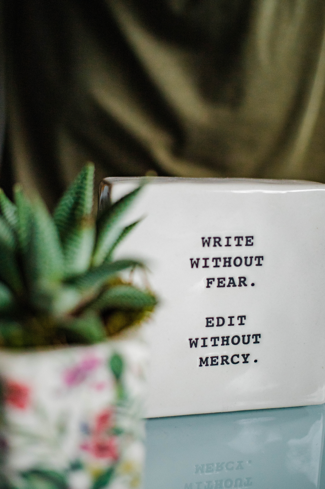

Меня зовут Бермет, я пишу тексты более 11 лет. А еще я разработчик курса по Интуитивному письму и автор опубликованных 3х книг. Ниже вы можете наблюдать один из моих видео уроков записанных к Демо-версии курса
Ниже вы можете ознакомиться с текстами и упражнениями

Методика, с одной стороны, как ни в одной другой системе, предельно проста: "Садись и пиши!". Но с другой стороны, ведь никто из нас так по-настоящему-то и не умеет писать ("выражать свои мысли на бумаге"). В школе этому не учат! Там учат, КАК правильно писать, навязывая кучу ограничений и правил, а не ЧТО писать, особенно в своих дневниках. И правильно делают: хоть "не лезут в душу" человеку. А то бы и там "отбили" всякое желание заниматься самопознанием. Одни только школьные сочинения "на заданную тему" понатворили такого, что сейчас и "силком не засадить" за стол какого-нибудь 30-летнего "молодого" человека. Он сядет и, как в школе, не будет знать, о чем ему писать. Конечно, я бы не хотел обидеть "отличников", у которых не было проблем с сочинениями. Но осталось ли у них к 30 годам желание "сочинять", "излагать" свои мысли?
Короткие рассказы
Литературный скетч.«Записки из бара»
Как и всякий писатель, я искала свое место, где могла бы затесаться среди «своих», людей образованных, с высоким уровнем понимания смыслов, умевших различать зерна от плевел, но притом тех, кто сохранил в себе умение смеяться жизненным невзгодам в лицо.
За пару лет странствий, я нашла себя между страниц книг по психологии, когда могла быть на дне стакана с кальвадосом.
Моё чувство юмора, унаследованное от Хэмингуэя и Ремарка, не дали мне упустить возможности отметить подвижность серого вещества в черепной коробке и его способность к попыткам репродукции каких-то искр литературного характера.
Я зашла в самый свой любимый бар за самым тривиальным напитком, который назывался: «удивите меня, леди-бармен, пожалуйста. Я сегодня хочу выпить за любовь»
Конечно, высокая, девушка с пышной грудью, в галстуке-бабочке и костюмной жилетке поверх нагого тела, и вероятно брюках, которых не было видно за барной стойкой, улыбнувшись, подмигнула мне и обратилась как маг, к склянкам с ядами.
Прочитать продолжение...>
Пост про неидеальность мира.
Написан только с одним лишь мотивом – не упускать момент любить, и позволять себе творить. Как минимум, пробовать себя в написании текстов, тестировать/развивать свой потенциал.Творчество, искусство будут жить вечно. Это один из способов увековечить свое имя и послания, на протяжении какого-то времени.
Люди любят людей, люди любят жизнь. Конечно, нам интересны мы сами, нас это волнует и не только потому, что от этого зависит наше выживание, но и потому что мы способны ДУМАТЬ, ЧУВСТВОВАТЬ и ЖЕЛАТЬ.